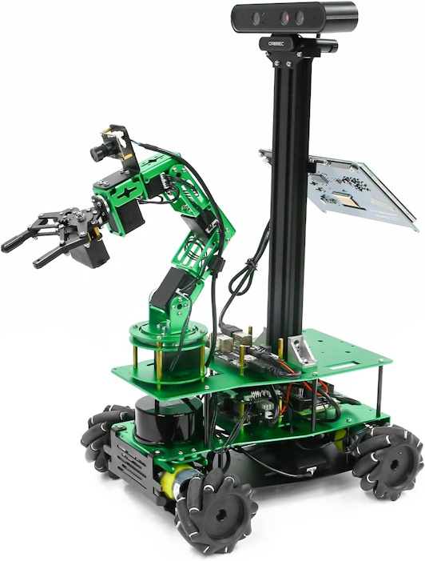
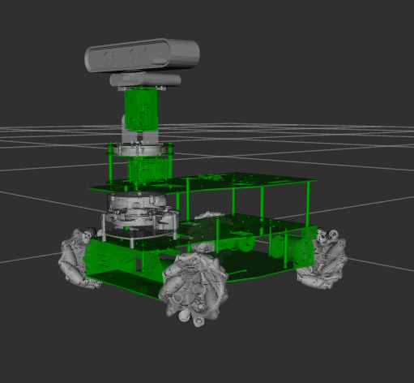
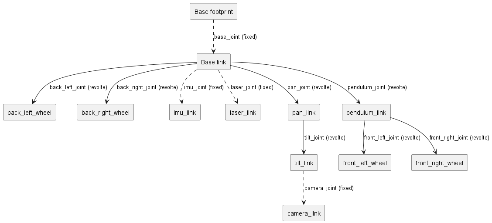
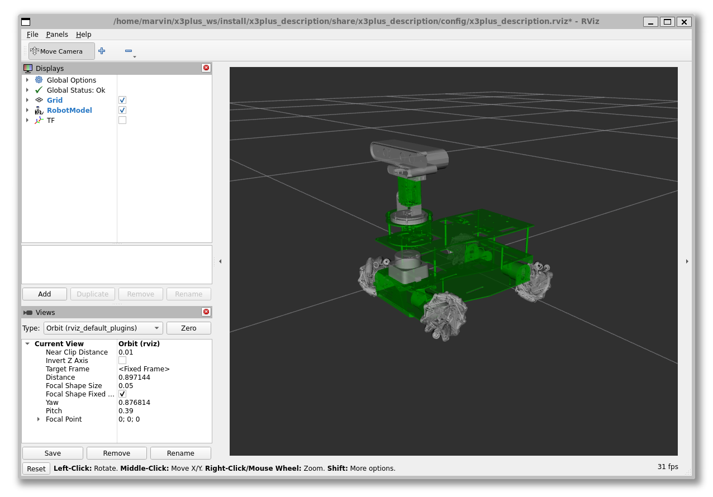
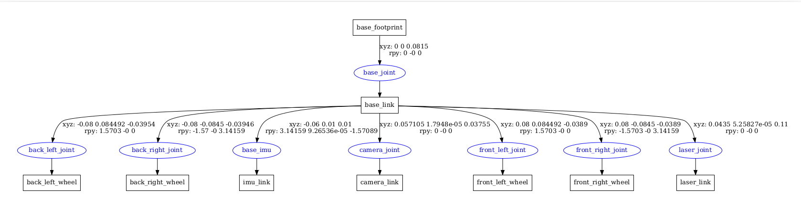

Describe the robot
ROSMASTER X3 PLUS
ROSMASTER X3 PLUS is an omnidirectional movement robot developed based on the ROS robot operating system. It supports four controllers: Jetson NANO 4GB/ORIN NX/ORIN NANO and Raspberry Pi 5. It is equipped with high-performance hardware configurations such as lidar, depth camera, 6DOF robotic arm, 520 high-power motor, voice recognition interactive module, and HD 7-inch display screen. It can realize applications such as APP mapping and navigation, automatic driving, human feature recognition, moveIt robotic arm simulation control and multi-machine synchronous control. It supports mobile phones, handles, computer keyboards remote control. 124 video tutorials with Chinese and English subtitles and codes are provided for free.
Reasonable design, unique shape
- X3PLUS supports four development boards: Jetson NANO 4GB/ORIN NX/ORIN NANO/RaspberryPi 5, suitable for different users.
- The whole robot is made of green aluminum alloy material, which is safe and non-toxic, beautiful and durable.
- Mecanum wheel and pendulum suspension chassis can make the robot adapt to uneven ground.

Vision for a variant
The goal is to modify the original design to a simpler structure. Lets replace the arm with a pan tilt unit to have a flexible visualization unit.

Logical Structure
The robot has a logical structure, which we should plan for.

Describe the Rosmaster 3 robot
Copy the original files
Adapting the model shall keep the structure and naming content while preparing the model description for simulation and extended description.
URDF or XMACRO
Note: Due to the fact, that the source provides an urdf file and a xacro file which are not consistent, the decision is to use the xacro files as the definition source. These needs adaption to integrate into the simulation.
- Copy the files into local package master3_description
- Using the urdf file from the urdf folder
- Using the STL files from the meshes folder
- Adjust all internal references to the assets of the original package, especially for the meshes
- Skip the xacro files
Build iterativly
Iterating the description package is easier when only that package and dependencies are build.
colcon build --packages-up-to x3plus_description
New Launch file
Setup a new launch file display_Xacro.launch.py for displaying the xacro description
Adjust the robot description generation with xacro application for the master xacro definition file considering the arguments.
robot_description_config = xacro.process_file(xacro_file,
mappings={
}).toxml()
Checking the Visual Model
There is a launch file which is starting the RViz2 application to view the urdf model.
ros2 launch x3plus_description display_Xacro.launch.py

Checking the structure
ROS provides a tool which can check the urdf.
But first it is required to generate the urdf file from the xacro definition with the variant options you want to use.
xacro check_urdf yahboomcar_X3plus.urdf.xacro > yahboomcar_X3plus.urdf mecanum:=False
Try to parse the model specified by the program argument to validate it.
check_urdf yahboomcar_X3plus.urdf
The output will display the structure of the robot.
robot name is: yahboomcar_X3plus
---------- Successfully Parsed XML ---------------
root Link: base_footprint has 1 child(ren)
child(1): base_link
child(1): back_left_wheel
child(2): back_right_wheel
child(3): imu_link
child(4): camera_link
child(5): front_left_wheel
child(6): front_right_wheel
child(7): laser_link
There is also a more graphical representation be the following tool
urdf_to_graphviz yahboomcar_X3plus.urdf yahboomcar_X3plus
This will generate a gv (graphviz) and PDF file with the graph.
